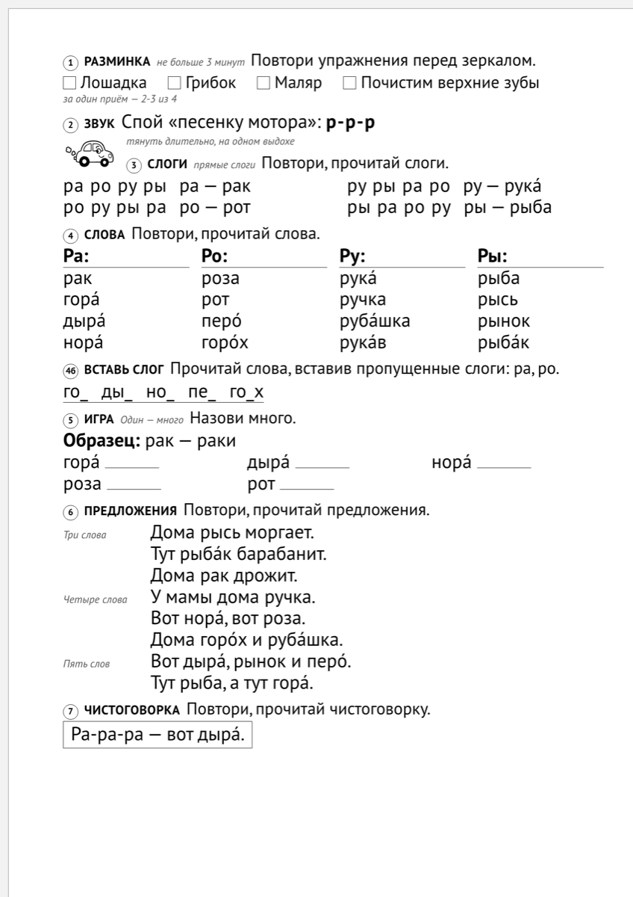
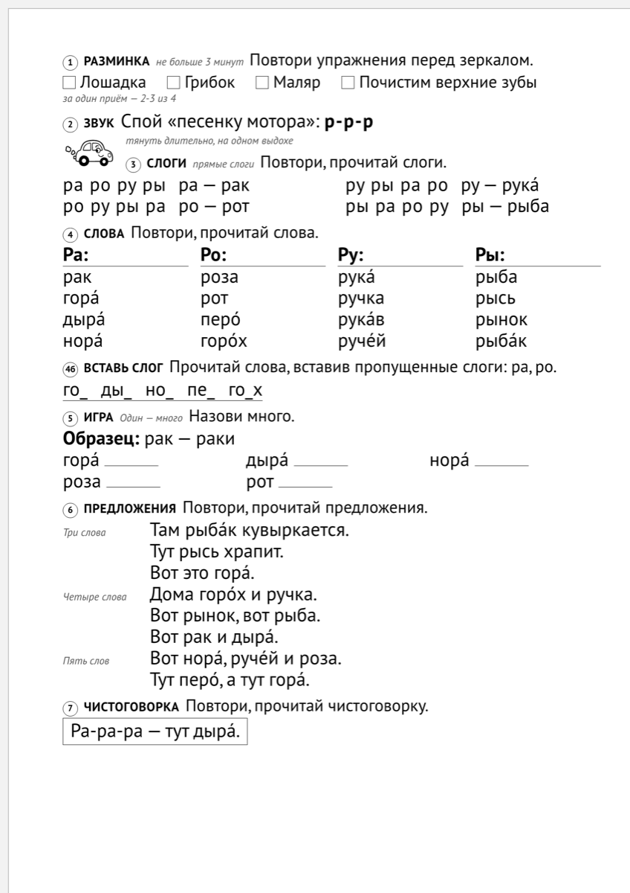
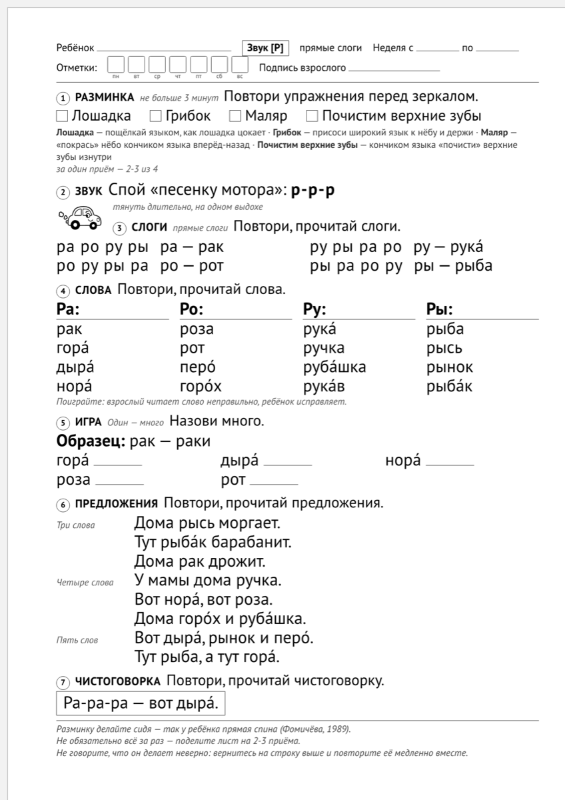
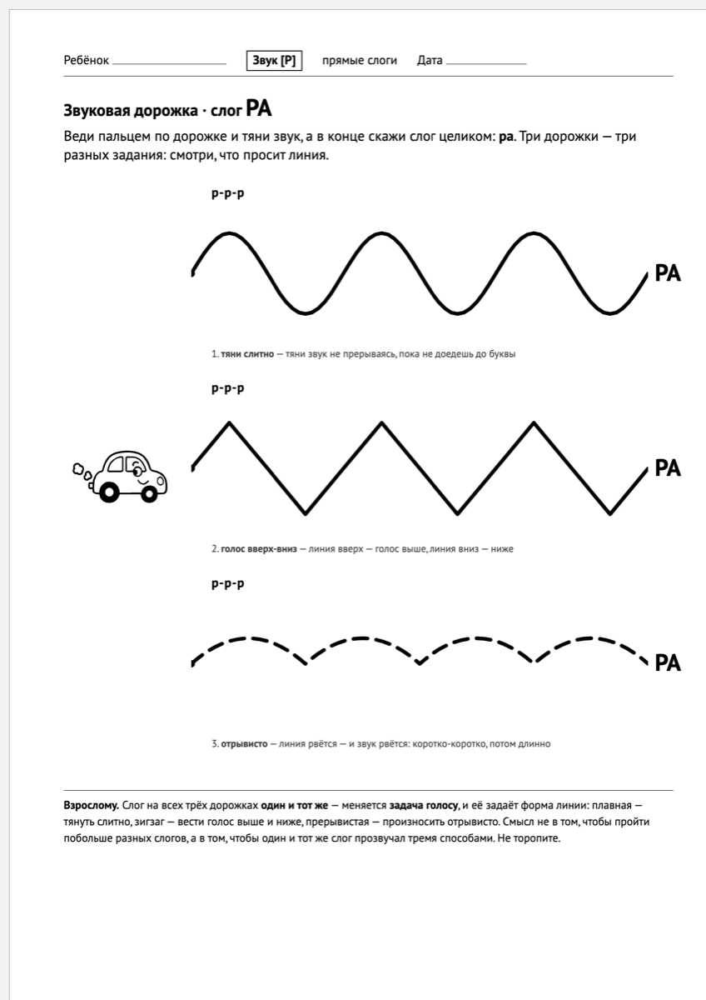
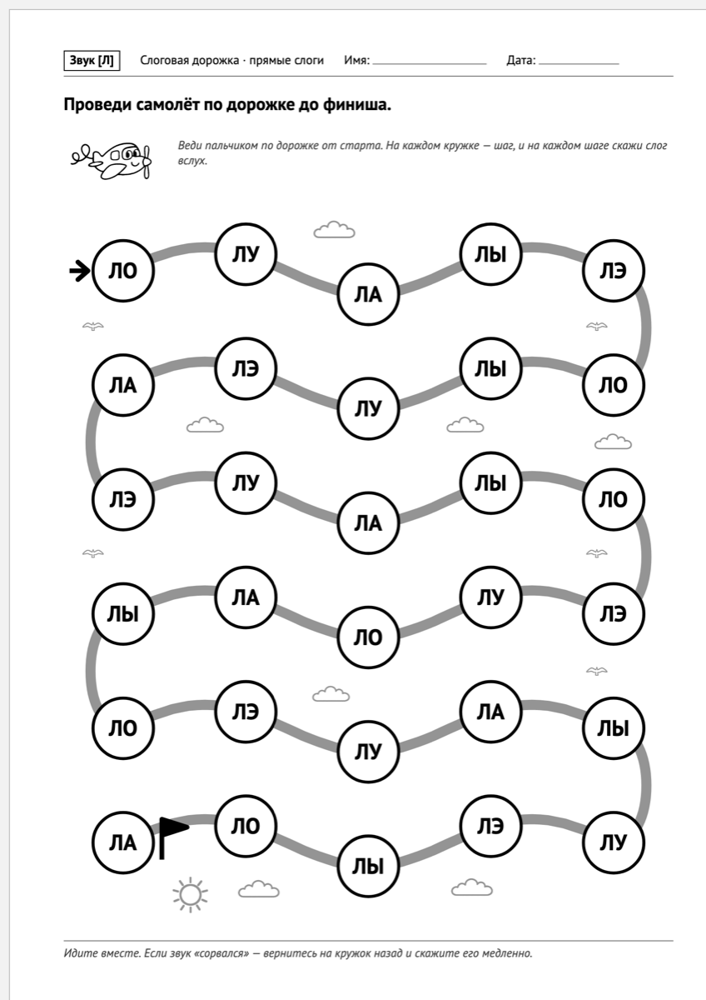
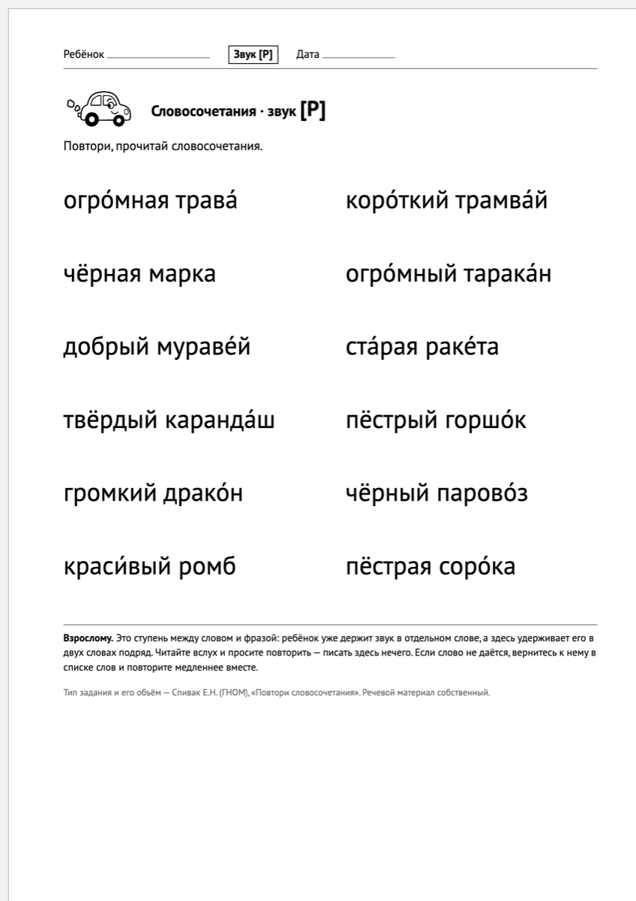
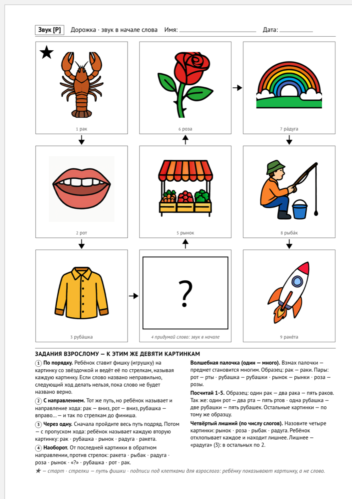
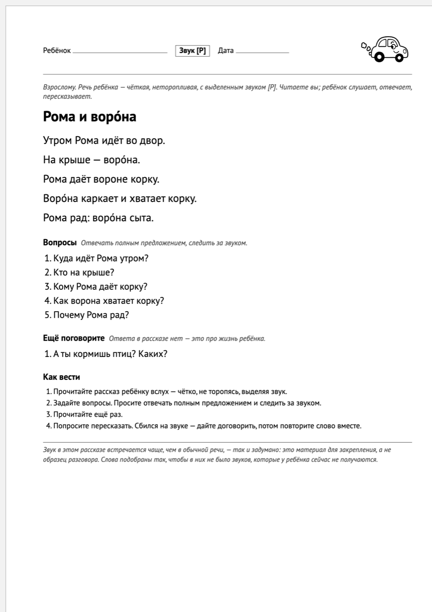

TEKST.md.
Моё здесь три вещи: фрагменты снимков вырезаны и обведены, вставлены таблицы с замерами,
и подписи под фрагментами — черновые (их по канону пишешь ты, я поставил рабочие).
Порядок пунктов — канонный: «чем отличается» поднят наверх, как требует разбор Зуева.
Логозвук собирает печатный лист на автоматизацию звука. Выбираете звук, отмечаете, каких звуков у ребёнка ещё нет — и получаете готовый А4. Сейчас работают одиннадцать звуков и шесть видов материала.
В циклограмме логопеда детского сада есть строка «Изготовление пособий» — час каждый день.
Время уходит на то, чтобы найти материал на нужный звук и «подогнать» его под ребёнка. Подгонять приходится всегда. Альбом на звук [Р] рассчитан на ребёнка, у которого всё остальное уже стоит, — а часто на приём приходят дети с дизартрией и ОНР, где нарушено полсписка. В слове «рубашка» есть [ш], в «дыре» — [д]. Ребёнку, у которого этих звуков нет, такое слово не помогает, а мешает.

Три шага.
Что происходит на втором шаге.
Например, выбрали звук [Р]. В картотеке звука [Р] 168 слов. Девять уходят сразу и без вопросов — это слова с [Л], его путают с [Р] почти всегда. Остаётся 159.
Отметили, что не поставлены [Ш] и [Ж], — остаётся 135. Отметили ещё [С] и [З] — остаётся 105. Полсотни слов, которые ребёнку сейчас не по силам, на лист не попадут, и вам не придётся вычёркивать их карандашом.

Мягкие пары отмечать не нужно: отметили [Л] — уйдёт и [Ль].
У бумажного альбома есть то, чего нет здесь: тексты, выверенные десятилетиями, рисунки художника, и он не сломается и не «не загрузится». Если у вас есть хороший альбом — он и дальше будет хорошим.
Отличие одно. Альбом напечатан один раз и на всех детей. Здесь материал собирается под того ребёнка, который сидит перед вами: слова со звуками, которых у него ещё нет, на лист не попадают.
| бумажный альбом | Логозвук | |
|---|---|---|
| подбор под ребёнка | один материал на всех детей | слова со звуками, которых у ребёнка нет, на лист не попадают |
| сколько звуков | отдельное издание на каждый звук | одиннадцать звуков в одном месте |
| второе занятие на тот же звук | те же страницы | кнопка — и набор слов другой |
| сколько стоит | покупается | бесплатно |
Занятие на двоих. У одного ребёнка не поставлены [Ш] и [Ж], у второго к ним ещё [С] и [З]. Отмечаете все четыре — и остаётся материал, который оба произнесут без спотыкания. Один лист вместо двух.
Ребёнок с дизартрией. Простая дислалия почти не приходит: приходят дизартрия и ОНР, где нарушено полсписка. Альбом на [Р] у такого ребёнка наполовину состоит из слов, которые он сейчас не выговорит. Здесь их не будет: на этом профиле от 168 слов картотеки остаётся 105.
Лист домой. Тот же материал печатается домашним листом — рядом с каждым упражнением написано, что делать взрослому, который не логопед.

Сервис для логопеда: в детском саду, в частной практике, для дефектолога. Родителю он тоже пригодится.
Шесть материалов, все на один и тот же звук и один и тот же профиль ребёнка.
Занятие — составной лист: гимнастика, изолированный звук, слоги, слова, предложения, чистоговорка. Один лист закрывает занятие целиком.
Звуковая дорожка — ребёнок ведёт пальцем по линии и тянет звук. Три линии — три задачи голосу: тянуть слитно, вести выше и ниже, произносить отрывисто.

Слоговая дорожка — слоги по тропе, с фоном.

Словосочетания — прилагательное и существительное, оба со звуком.

Лабиринт — ход по картинкам, звук в нужной позиции слова.

Рассказы — готовый текст для пересказа и лист «сочини сам» по опорным словам.

Картинки свои: 979 рисунков, по одному на каждое слово, которое может попасть в клетку.
| в картотеке | сколько |
|---|---|
| звуков | 11 |
| слов-существительных | 1 595 |
| глаголов | 356 |
| прилагательных | 253 |
| текстов для пересказа | 31 |
| своих рисунков | 979 |
Бесплатно. Регистрации нет.
Обычный А4, чёрно-белый принтер подойдёт — цветной лист есть отдельной кнопкой. Работает в браузере на телефоне и на компьютере.
Впереди: три вида заданий — «четвёртый лишний», зашумлённые картинки и обводка. Ручная проверка материалов.